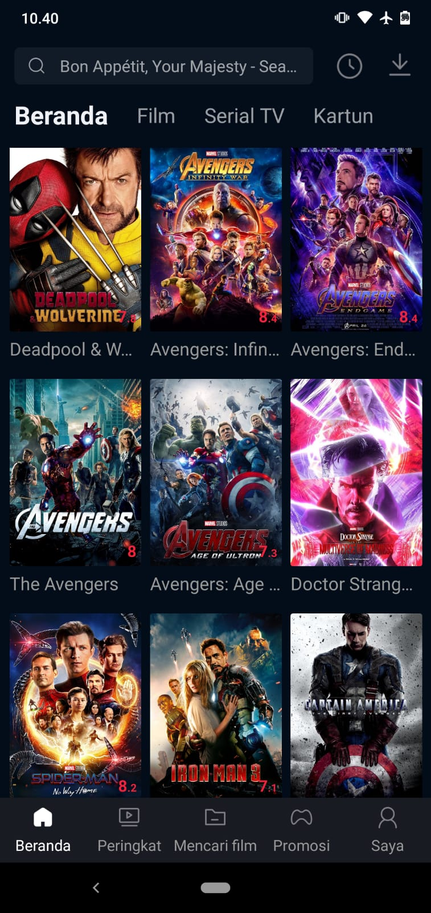
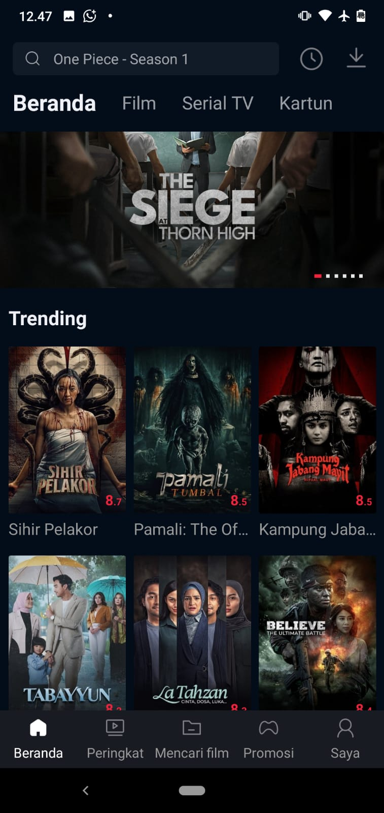
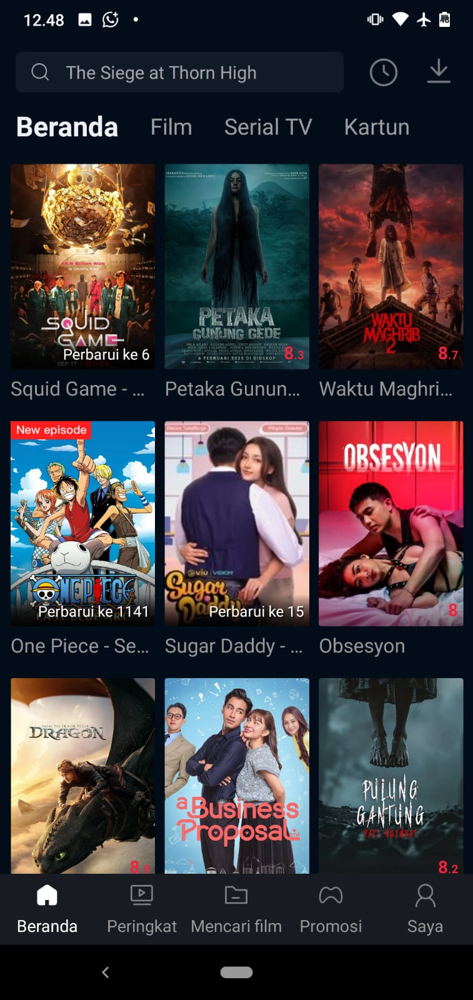

netflix mod adalah aplikasi hiburan yang memungkinkan pengguna menikmati berbagai fitur menarik secara gratis dengan tampilan sederhana dan mudah digunakan. Aplikasi ini dirancang agar ringan, cepat, dan kompatibel dengan berbagai perangkat Android.
Versi terbaru menghadirkan peningkatan performa, perbaikan bug, dan pengalaman pengguna yang lebih stabil dibanding versi sebelumnya.

Netflix merupakan platform layanan streaming digital yang menyediakan berbagai film dan serial terbaru dari berbagai belahan dunia. Melalui Netflix, pengguna dapat menikmati ribuan konten hiburan dengan beragam genre, seperti drama, action, petualangan, thriller, horor, komedi, romantis, animasi, hingga dokumenter. Konten yang tersedia mencakup film layar lebar, serial televisi, acara spesial, serta tayangan original yang diproduksi secara eksklusif oleh Netflix. Salah satu keunggulan utama Netflix adalah pembaruan konten yang dilakukan secara rutin. Netflix secara aktif menambahkan film dan serial terbaru, termasuk judul-judul yang sedang populer dan banyak dibicarakan. Selain itu, Netflix juga dikenal dengan Netflix Original Series dan Netflix Original Movies yang tidak dapat ditemukan di platform streaming lain, sehingga memberikan pengalaman menonton yang lebih eksklusif bagi penggunanya. Netflix dapat diakses melalui berbagai perangkat, seperti smartphone, tablet, laptop, komputer, dan smart TV, sehingga pengguna memiliki fleksibilitas penuh dalam menikmati hiburan kapan saja dan di mana saja. Antarmuka Netflix dirancang sederhana, modern, dan mudah digunakan, sehingga pengguna dapat dengan cepat mencari film atau serial yang diinginkan berdasarkan judul, genre, atau rekomendasi yang tersedia. Untuk meningkatkan kenyamanan menonton, Netflix menyediakan kualitas video yang tinggi dengan berbagai pilihan resolusi, yang dapat disesuaikan dengan kecepatan internet pengguna. Selain itu, Netflix juga mendukung subtitle dan dubbing dalam berbagai bahasa, sehingga tayangan dapat dinikmati oleh pengguna dari berbagai latar belakang bahasa dan negara. Netflix dilengkapi dengan sistem rekomendasi cerdas yang secara otomatis menyarankan film dan serial berdasarkan riwayat tontonan serta preferensi pengguna. Dengan fitur ini, pengguna dapat dengan mudah menemukan tayangan baru yang sesuai dengan minat mereka tanpa harus mencari secara manual. Dengan koleksi konten yang lengkap, pembaruan film dan serial terbaru secara konsisten, serta fitur-fitur pendukung yang memudahkan pengguna, Netflix menjadi salah satu platform streaming digital yang menawarkan pengalaman hiburan modern, praktis, dan berkualitas tinggi bagi para pecinta film dan serial.

Netflix mod premium Selain menghadirkan film dan serial internasional dari berbagai negara, Netflix juga secara aktif menayangkan berbagai film Indonesia yang berkualitas. Koleksi film Indonesia yang tersedia mencakup beragam genre, seperti drama, horor, komedi, romantis, keluarga, hingga film action dan thriller. Dengan pilihan yang terus diperbarui, pengguna dapat menikmati film Indonesia terbaru maupun film-film populer yang telah dikenal luas oleh masyarakat. Netflix memberikan perhatian khusus terhadap kenyamanan penonton dengan menyediakan subtitle pada film-film Indonesia. Kehadiran subtitle ini membantu penonton memahami dialog dan alur cerita dengan lebih jelas, serta memudahkan penonton dari berbagai latar belakang bahasa untuk menikmati tayangan tanpa hambatan. Subtitle juga memungkinkan film Indonesia untuk ditonton oleh penonton internasional yang tertarik mengenal cerita dan budaya Indonesia. Melalui dukungan subtitle, film Indonesia yang ditayangkan di Netflix dapat menjangkau audiens global. Penonton dari berbagai negara dapat menikmati karya perfilman Indonesia sekaligus memahami nilai budaya, kehidupan sosial, serta cerita khas Indonesia yang disampaikan melalui film. Hal ini menjadikan Netflix sebagai platform yang berperan dalam memperluas jangkauan dan eksistensi film Indonesia di tingkat internasional. Selain itu, Netflix menghadirkan kualitas tayangan yang tinggi pada film-film Indonesia, baik dari segi gambar maupun suara. Dengan pilihan resolusi yang dapat disesuaikan dengan kecepatan internet pengguna, pengalaman menonton film Indonesia menjadi lebih nyaman dan menyenangkan. Pengguna dapat menonton melalui berbagai perangkat, seperti smartphone, tablet, laptop, dan smart TV, kapan saja dan di mana saja. Kehadiran film Indonesia bersubtitle di Netflix tidak hanya memberikan hiburan, tetapi juga menjadi bentuk dukungan terhadap industri perfilman lokal. Netflix membantu memperkenalkan karya sineas Indonesia kepada penonton yang lebih luas, sekaligus memberikan ruang bagi film Indonesia untuk berkembang dan mendapatkan apresiasi global. Dengan koleksi yang terus bertambah dan dukungan subtitle yang lengkap, Netflix menjadi platform yang menghubungkan karya film Indonesia dengan penonton dari seluruh dunia.

Apk Netlix Mod Premium Apk Netlix Mod Premium Apk Netlix Mod Premium Apk Netlix Mod Premium Apk Netlix Mod Premium Apk Netlix Mod Premium Apk Netlix Mod Premium Apk Netlix Mod Premium Apk Netlix Mod Premium Apk Netlix Mod Premium Apk Netlix Mod Premium Apk Netlix Mod Premium Apk Netlix Mod Premium Apk Netlix Mod Premium Apk Netlix Mod Premium Donwload Apk Netlix Mod Donwload Apk Netlix Mod Donwload Apk Netlix Mod Donwload Apk Netlix Mod Donwload Apk Netlix Mod Donwload Apk Netlix Mod Donwload Apk Netlix Mod Donwload Apk Netlix Mod Donwload Apk Netlix Mod Donwload Apk Netlix Mod Donwload Apk Netlix Mod Donwload Apk Netlix Mod Donwload Apk Netlix Mod Donwload Apk Netlix Mod Donwload Apk Netlix Mod